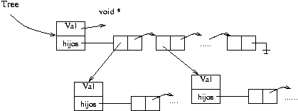

Hacer funciones en C que permitan manejar una lista enlazada simple construyendo el tipo LISTA, y otras funciones (basadas en el tipo anterior) que manejen un árbol general TREE (cada nodo puede tener un número variable de hijos). La idea es que cada nodo del árbol TREE contiene una LISTA de sub-árboles.

La interfaz a implementar para LISTA (lista.h) es
/* * Lista simplemente enlazada */ /* agrega el elto p al comienzo de la lista l */ LISTA *cons_l(void *p, LISTA *l); /* Retorna el elemento más nuevo de la lista y se posiciona al comienzo */ void *first_l(LISTA *l); /* Retorna el elemento siguiente de la lista */ void *next_l(LISTA *l); /* Libera la lista completa */ void free_l(LISTA *l);
Deben definir el tipo LISTA e implementar todas estas funciones. Para recorrer la lista deben usar first_l y luego seguir con next_l hasta que les retorne NULL.
La interfaz a implementar para TREE (arbol.h) es
/* Crea un árbol con val en la raíz y con esa lista de hijos */ TREE *make_tree(char val, LISTA *hijos); /* Obtiene el campo valor de la raíz del árbol */ char getval_tree(TREE *t); /* Obtiene la lista de hijos de la raíz del árbol */ LISTA *getchild_tree(TREE *t); /* Libera todo el árbol */ void free_tree(TREE *t);Deben definir el tipo TREE e implementar todas estas funciones.
Se les provee el programa eval.c que llama a las funciones para evaluar una expresión simple de prefijo. La expresión solo soporta valores de un carácter, o sea valores de 0 a 9, y los operadores +, -, * y /.
Uds requieren crear el archivo de declaración de la
interfaz lista.h y arbol.h.
La salida que debieran obtener para algunas expresiones está
en el archivo outlista.txt para que la comparen.
La tarea debe entregarse antes del plazo final a través de U-cursos
y debe compilar sin errores y
ejecutar, o no será evaluada. Si tienen una tarea que funciona en parte, pero
no completa, entréguenla a tiempo y obtendrán algo de nota.